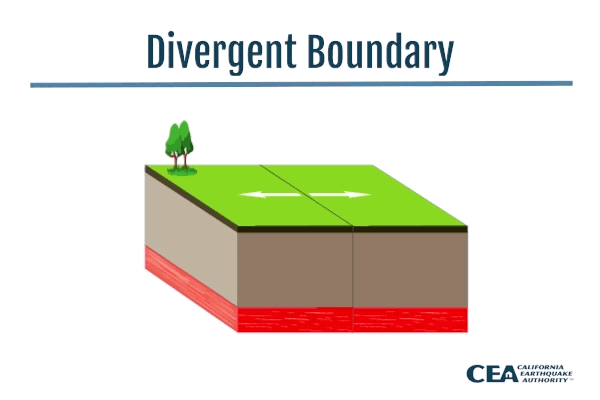
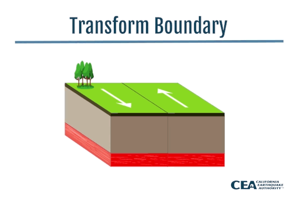
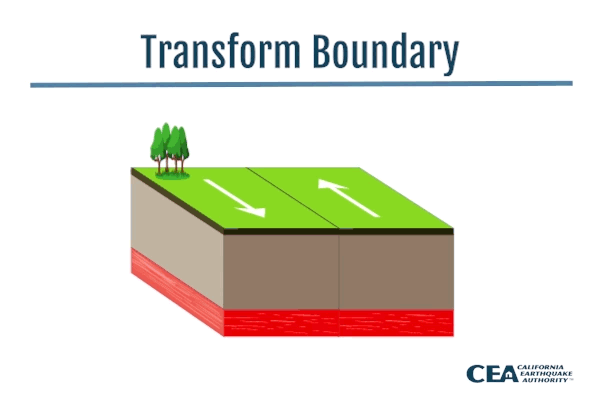

PLATE TECTONICS
Our country is blessed with so many land features such as mountains and volcanoes. These features can be sources of different minerals or can be used for agricultural purposes. For example, we have the majestic and world renowned Mayon Volcano. Because of its activity, it produces fertile slopes and plains which are used by the locals to grow their crops. Also, found in the northeastern coast of Luzon, we have the Sierra Madre mountain range which is home to many endemic species of flora and fauna.
We will study thoroughly the framework that will enable us
to understand
how and why several features of the Earth continuously change.
This theory is what we call “Plate Tectonics.”
This describes the events within the Earth that give rise to mountain
ranges, volcanoes, earthquake belts, and other features of the Earth’s surface.
What is Plate Tectonics?
As shown in Figure, there are seven relatively large plates and a
number
of smaller ones, including the Philippine plate. The plates move very
slowly
but constantly, and this movement is called tectonics; thus the theory of
moving lithospheric plates is called plate tectonics.
Before we study more
about plate tectonics, let’s discuss first one of
the consequences of moving
crustal plates which is crucial in studying plate
tectonics: earthquake.
An earthquake releases
three types of seismic waves; Primary (P-waves),
Secondary (S-waves), and
Long surface waves (L-waves). The first two travel
into the Earth’s interior
while the last one on the surface. These waves
travel at different velocities;
thus, do not arrive at a seismic recording
station at the same time. The farther
the recording instrument is from the
focus, the greater the difference in arrival
times of the first P-wave
compared to the first S-wave. The difference in the
arrival time will tell
us the distance of the earthquake’s focus from the seismic
recording station.
However, it does not tell in which direction it came from.
If we have at least three recording stations that can tell how far away from them the earthquake occurred, the epicenter can be determined using the triangulation method. It uses distance information from three seismic stations to locate the earthquake epicenter. On a map, circles are drawn around each seismic station. The radii of the circles are scaled to the estimated distance from the station to the earthquake. The three circles will intersect at one point that locates the earthquake.
Types of Plate Bounderies
Studying plate boundaries is important because along these boundaries
deformation
of the lithosphere is happening. These geologic events have a
great impact not
only on the environment but also on us.
There are three distinct types of plate boundaries, which are differentiated
by
the type of movement they exhibit.
The first type of plate boundary is termed divergent boundary wherein
plates move
apart, creating a zone of tension. Can you identify adjacent plates
depicting
divergent boundary in the picture.
Let’s take the case of the Philippine plate and the Eurasian plate. You
will
notice that the two plates are moving toward each other. This is an example
of a
zone where plates collide, and this second type of plate boundary is called
convergent plate boundary.
The third type is the transform fault boundary where plates slide or grind
past
each other without diverging or converging. The best example of this plate
boundary
is the San Andreas fault which is bounded by the North American
plate and the
Pacific plate.
ctrl + r to make the picture move
 

Divergent Plate Boundary
Convergent Plate Boundary
Transform Plate Boundary
Converging Oceanic Crust Leading Plate and Continental Crust Leading Plate
The previous activity depicts what happens during collision of two plates; one has continental edge while the other has an oceanic edge. From the diagram, it is clear that this event gives rise to the formation of a volcanic arc near the edge of a continental leading plate. The reason for this is because the denser oceanic crust (PlateA) undergoes what we call subduction process or the bending of the crust towards the mantle. Since the mantle is hotter than the crust, the tendency is, the subducted crust melt forming magma. Addition of volatile material such as water will cause the magma to become less dense, hence allowing it to rise and reach the crust once again and causing volcanic activities on the continental leading plate. For the oceanic crust, one important geologic feature is formed, and that is the trench. Also called submarine valleys, ocean trenches are the deepest part of the ocean. One of the deepest is the Philippine trench with a depth of 10 540 meters. Another subsequent effect of the continuous grinding of plates against each other is the occurrence of earthquakes. The subduction of plate can cause earthquakes at varying depths. Most parts of the world experience occasional shallow earthquakes – where the focus is within 60 km of the Earth’s surface. Of the total energy released by earthquakes, 85% comes from shallow earthquakes. Meanwhile, about 12% of energy originates from intermediate earthquakes or those quakes with a focal depth range of 60 to 300 km. Lastly, are the deep earthquakes whose origin is more than 300 km to 700 km below the Earth’s surface.
Convergence of Oceanic Plates
Like the first type of convergent boundaries discussed earlier, converging oceanic
plates will cause formation of trenches, and these trenches will become sources of
earthquakes. Underwater earthquakes, especially the stronger ones, can generate
tsunamis. The Japanese term for “harbor wave,” tsunami is a series of ocean waves
with very long wavelengths (typically hundreds of kilometers) caused by large-scale
disturbances of the ocean. The leading edge of the subducted plate will eventually
reach the mantle causing it to melt and turn into magma. The molten material will
rise to the surface creating a volcanic island arc parallel to the trench. Volcanic
island arc is a chain of volcanoes position in an arc shape as seen in figure below.
Formation of the Philippine Archipelago
Many parts of the Philippines originated from oceanic-oceanic convergence. This
resulted from the collision of two oceanic plates, with one of
the plates diving
under the other. Majority of the islands in the Philippine archipelago are
considered as part of the Philippine Mobile Belt. These islands were formed
65 million years ago at the southern edge of the Philippine Sea Plate and are
considered as part of island arcs. Other parts of the Philippines, such as Palawan,
Mindoro, and the Zamboanga Peninsula are all highland sections of the Sundaland block
of the Eurasian plate.
Aside from the formation of trenches and troughs, the downward movement of oceanic lithospheres underneath the Philippine Archipelago creates active volcanic chains. For example, the descent of the West Philippine Sea oceanic lithosphere along the Manila Trench created a volcanic chain from Taiwan to Mindoro. Some of the known active volcanoes in this chain are Pinatubo in Central Luzon and Taal in Batangas. Also, the constant dipping movement of slabs induces frequent moderate to strong earthquakes at various depths, gives rise to mountain ranges and develops the geologic character of the Philippine Archipelago.
Divergence of Plates
Formation of rift valleys and oceanic ridges are indications that the crust is spreading or splitting apart. In this case, the plates are forming divergent plate boundaries wherein they tend to move apart. Most divergent boundaries are situated along underwater mountain ranges called oceanic ridges. As the plates separate, new materials from the mantle ooze up to fill the gap. These materials will slowly cool to produce new ocean floor. The spreading rate at these ridges may vary from 2 to 20 cm per year. Although a very slow process, divergence of plates ensures a continuous supply of new materials from the mantle. The Mid-Atlantic Ocean ridge is an example of spreading center which causes the divergence of the South American plate and the African plate.
Transform Fault Boundaries
If the blocks of wood in Activity 6 were to represent the lithospheric plates, you
will notice that there were two sets of divergent plate boundaries (between blocks
1 and 2, and blocks 3 and 4). But since the plates were adjacent to each other, a
new type of boundary is manifested and that is the transform fault boundary. Most
transform faults join two segments of a mid-ocean ridge (represented by the gaps
between 1 and 2, and between 3 and 4). Remember that the presence of a ridge is an
indication of diverging plates, and as the plates diverge between the two segments
of the mid-ocean ridge, the adjacent slabs of crust are grinding past each other
(blocks 2 and 3, blocks 1 and 3, and blocks 2 and 4). Although most transform faults
are located within the ocean basins, there are a few that cut through the continental
crust. An example of this is the San Andreas fault. The immediate concerns about
transform fault boundaries are earthquake activities triggered by movements along the
fault system.
Summary
Plate tectonics is a scientific theory that explains how the Earth's outer layer is made up of several plates that move and interact with each other. The movement of these plates is responsible for many geological phenomena, such as earthquakes, volcanic activity, and the formation of mountain ranges.
The theory states that the Earth's lithosphere (which includes the crust and uppermost part of the mantle) is broken into several large plates that move on top of the underlying asthenosphere. The movement of these plates is driven by the convection currents in the mantle, which cause the plates to either move apart (divergent boundaries), collide (convergent boundaries), or slide past each other (transform boundaries).
Divergent boundaries are areas where two plates are moving apart, and new crust is being created through volcanic activity. Convergent boundaries occur where two plates are colliding, and one plate is subducted (pushed down) beneath the other, leading to the formation of mountains, earthquakes, and volcanic activity. Transform boundaries are areas where two plates are sliding past each other, leading to the formation of faults and earthquakes.
The theory of plate tectonics has revolutionized the field of geology and our understanding of the Earth's geological processes. It has helped scientists explain the distribution of earthquakes and volcanoes, the formation of ocean basins and mountain ranges, and the movement of continents over time. Plate tectonics is also important in predicting and understanding natural disasters, such as earthquakes and tsunamis.